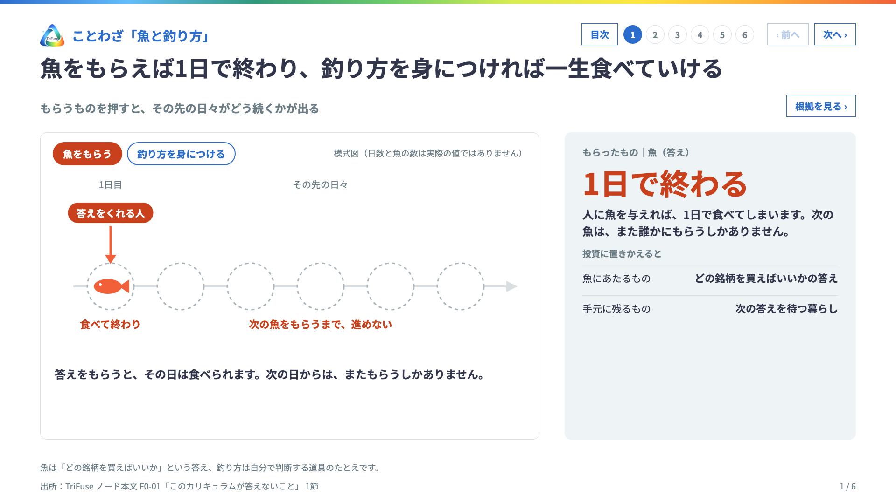
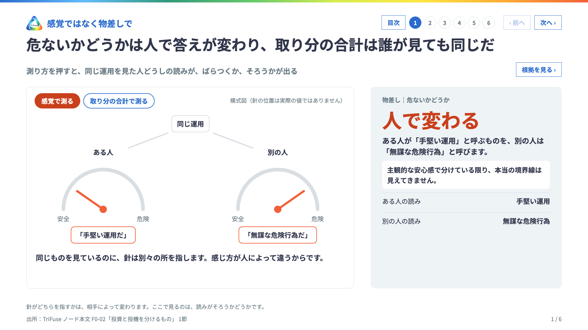
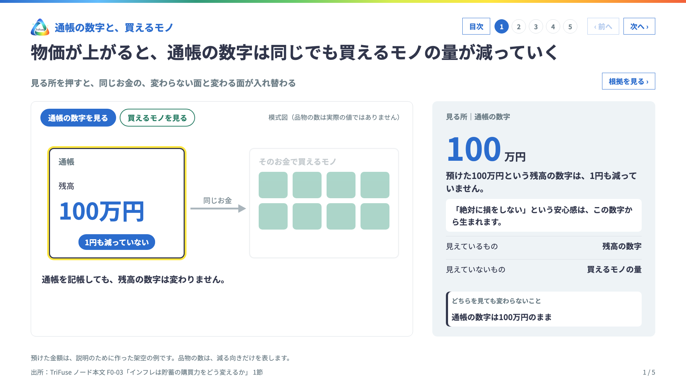
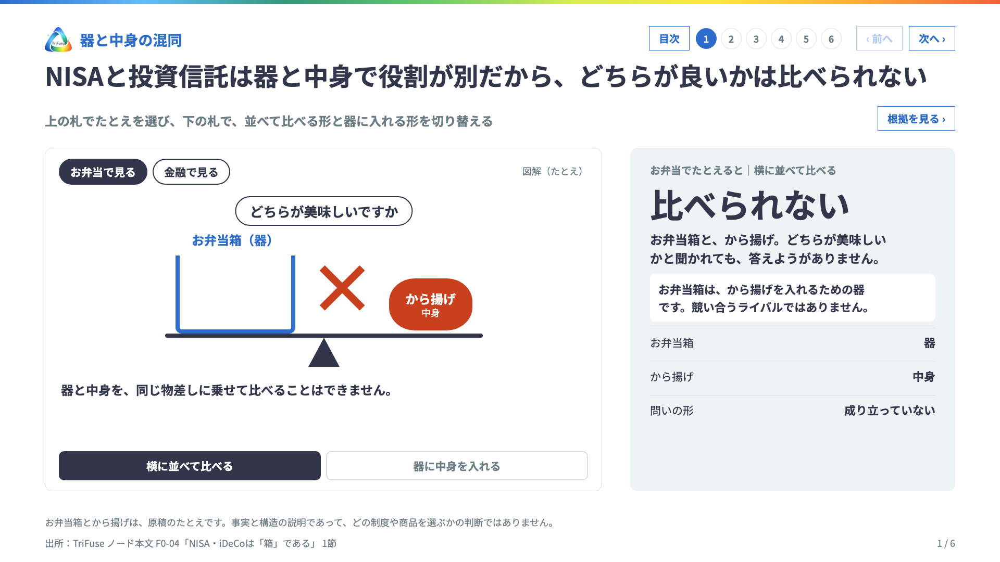
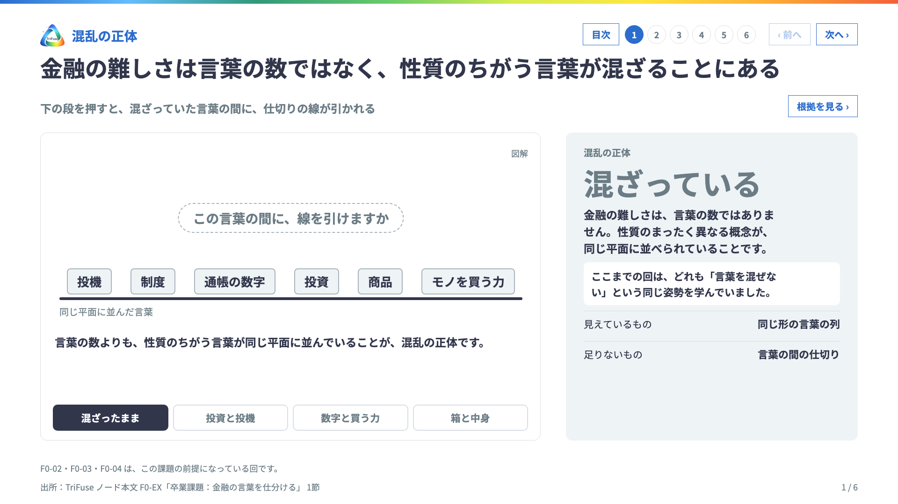

TriFuse
動く資料
押して確かめる資料です。分野を選び、レベルの順に進めます。開くと最初に目次が出ます。
情報セキュリティ資産を守る技術
L0 入口L1 基礎L2 原理L3 実践
L0 入口
真贋嘘と罠を看破する
L0 入口L1 基礎L2 原理L3 実践
L0 入口
金融お金の仕組みを知る
L0 入口L1 基礎L2 原理L3 実践
L0 入口

F0-01このカリキュラムが答えないこと›

F0-02投資と投機を分けるもの›

F0-03インフレは貯蓄の購買力をどう変えるか›

F0-04NISA・iDeCoは「箱」である›

F0-EX卒業課題：金融の言葉を仕分ける›
L1 基礎
経済世界が動く理由を読む
L0 入口L1 基礎L2 原理L3 実践